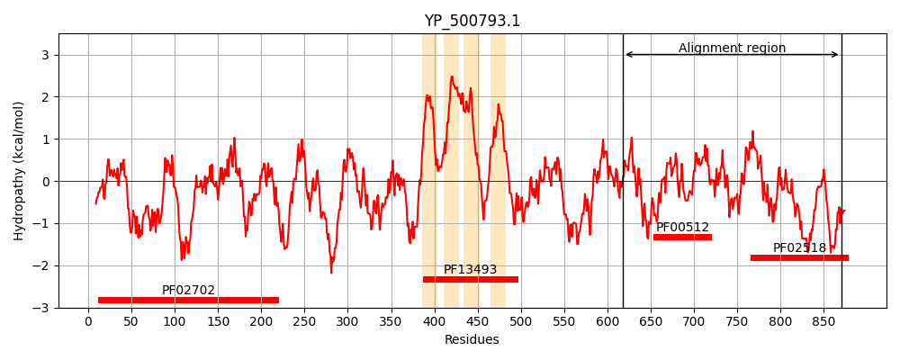
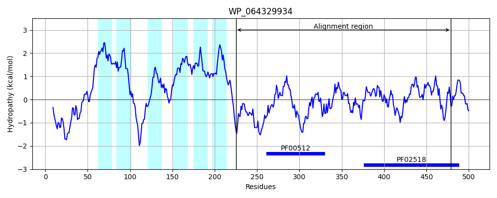
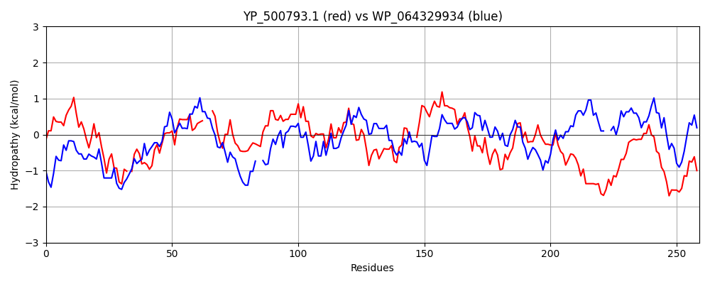

Hit Accession: WP_064329934
Hit TCID: 9.B.238.3.2
Hit Description: gnl|BL_ORD_ID|21302 gnl|TC-DB|WP_064329934.1|9.B.238.3.2 HAMP domain-containing histidine kinase [Shinella sp. HZN7]
Mach Len: 259
e:0.000000
Query TMS Count : 4
Hit TMS Count: 6
TMS-Overlap Score: 0.750000
Predicted Substrates:None
BLAST Alignment:
Score: 210 , Bit scores: 85 bits, E-value: 2.9e-17, Alignment length: 259, Percentage identity: 26
Query: 618 ASILESMLNELSLAVENVTLLKQTRESMLQAER-QLTHSNFLRSISHDIRTPLTTIMGNLDIL---VSHSKDMSIIEKEQLLVHSFQESQYLYLLVTNILSLTKLQSSNVQIKLQPYLVSELVEEIDMILERRHLKKRITVSSSV--NLQFIHIDSKLILQALFNLIENAVKHTSTDTKINLSIRYASYEQIEFAVIDEGPGISLEEQQKIFEPFYTGSNKYFKDNQKESMGLGLYLVQTILHKHQSNLQYKPNQPHGS 870
A +L S + L E + E+ +AE L S FL S+SH++RTPL I+G +++ V + + ++ +H + Q+L L+ IL L+++++ + + ++ E+ +++ R K I +S V ++ + D K + Q + NL+ NAVK T +I + + + ++ D GPGI EE + F GS + ++ GLGL +VQ IL KH K G+
Sbjct: 225 AQLLSSQSEKDDLIAELEVAKSMSDEARRRAEEANLAKSRFLASMSHELRTPLNAILGFSEVMSTEVLGPLNNPVYKEYTSDIH--RSGQHLLNLINEILDLSRIEAGKYDLSEDSVHLVDIAEDCIGMVQLRARAKNIAISEQVEGDMPAVWADEKALRQVILNLLSNAVKFTPQGGEIFVKAGWTAGGGQYISIKDNGPGIPEEEIPVVLSAFGQGSIAI--KSAEQGTGLGLPIVQAILAKHNGEFILKSKLREGT 479 | Protein Hydropathy Plots: |
|---|
|  |  |
Pairwise Alignment-Hydropathy Plot:
|
|---|
|  |